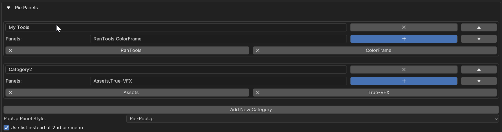
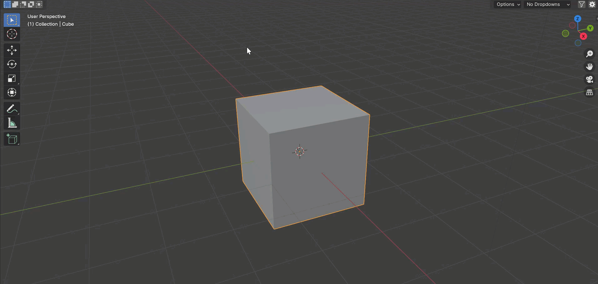
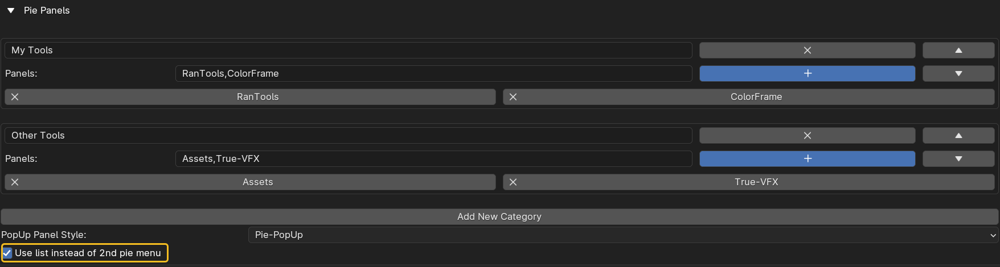
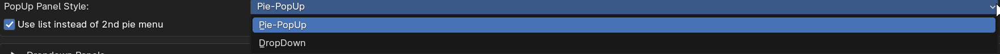
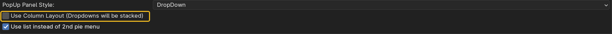
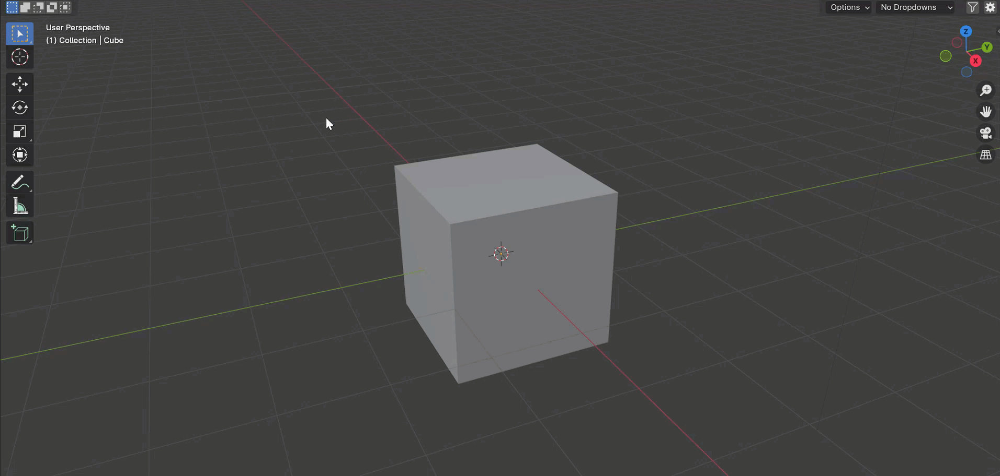

Pie Panels
Pie Panels provide a convenient way to access your panels directly in the viewport without opening the N-Panel.
Using Pie Panels
Creating categories is similar to what’s explained in the N-Panel filtering section. 
Once your categories are set up, you can press the shortcut key to summon the pie menu. 
There are a couple of options for customizing Pie Panels in the addon preferences:
Use List Instead of 2nd Pie Menu 
Enable this option if you prefer to see a list of addons in a vertical format instead of another pie menu.
Popup Panel Style 
There are two ways to access the panels once you have selected the addon. One is another pie menu with all the individual panels (as shown in examples above), and the other is a dropdown that displays the panels as dropdowns in a popup.
When you select the panel style as a dropdown, another option to choose the layout for the dropdowns will appear. 
Enable it if you prefer a vertical layout instead of a row. 